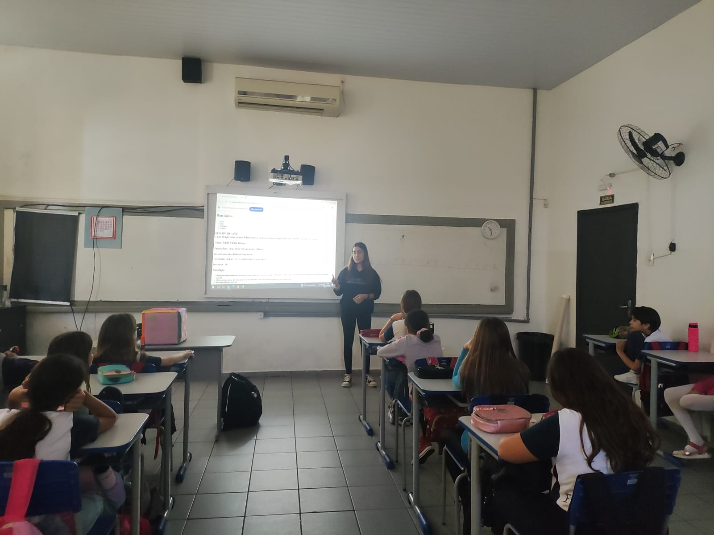
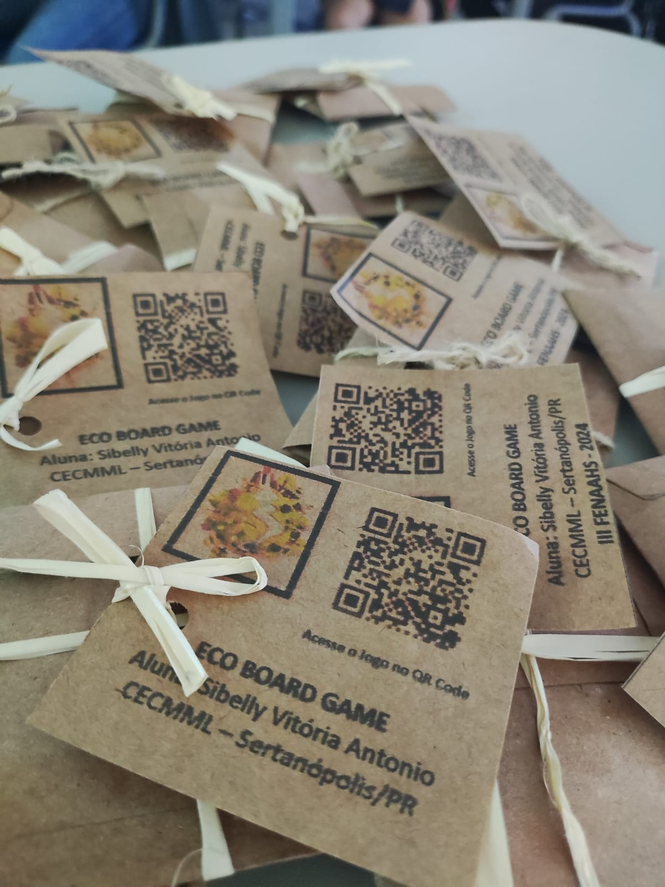
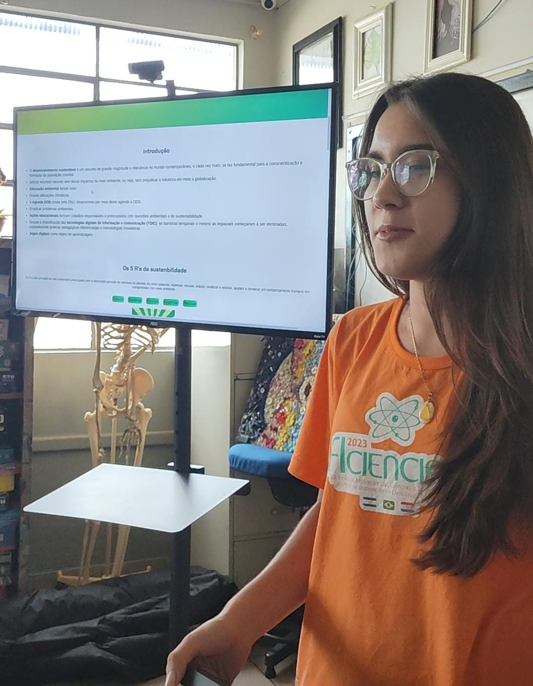
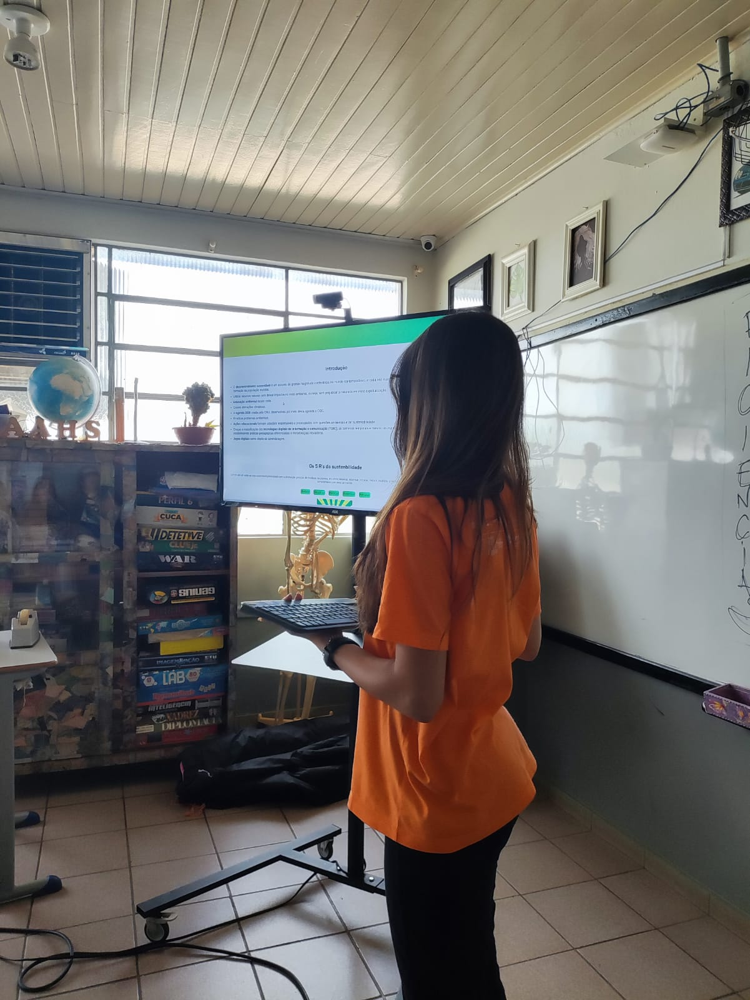

Os alunos da 5° série demonstraram grande interesse e entusiasmo pelo jogo, esforçando-se para responder a cada
pergunta e competir para serem a equipe vencedora. Eles ficaram empolgados com a experiência, mostrando satisfação e
alegria ao participarem das atividades. Recebemos um feedback extremamente positivo, com muitos alunos expressando
como se divertiram e como acharam o jogo educativo e envolvente.

Apresentando o projeto. Fonte: Autoral.
Apresentação do jogo digital. Fonte: Autoral.
Jogando o jogo físico. Fonte: Autoral.
Foto com os alunos. Fonte: Autoral.

Entrega de uma pequena lembrança para as crianças, envelopes com sementes de girassol e o QR Code
do Jogo. Fonte: Autoral.
Apresentação na sala de recursos NAAH/S
Relato da aplicação do projeto
A apresentação do projeto na sala de recursos do NAAH/S do Colégio Estadual Cívico Militar Monteiro Lobato para
alunos mais velhos do ensino médio. Foi uma oportunidade de compartilhar o que foi desenvolvido e de receber
feedbacks importantes de uma nova audiência. A experiência foi enriquecedora e ajudou a validar ainda mais o
trabalho realizado até agora.

Foto apresentando aos alunos da sala de recursos NAAH/S. Fonte: Autoral.

Foto apresentando aos alunos da sala de recursos NAAH/S. Fonte: Autoral.